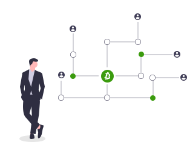

en
en
 zh-CN
zh-CN
MatrixDao is an autonomous orgnization based on decentralized ETF Dao of Conflux, aiming to lower the crypto-market threshold for the investors through the Dao orgnization, making it easier to invest and participate in the decentralized market, and acheiving stratigic yield by high efficient investment portfolio.
The born of MatrixDao provides a new investing method for medium and small investors, it breaks the traditional crypto investment idea, providing users with selected tracking index one basket asset portfolio, which greatly reduced the users' research cost, lowered the crypto investment threshold, and realized one-click investing fool-style operation

Since MatrixDao belongs to the passive decentralized investment portfolio, its income is less affected by fluctuations of individual asset, and it can effectively reduce the risks brought by other individual assets, and lower the volatility of other assest portfolio.
The products involve in every section and concept, which have a wide range, investors can choose their investment portfolio based on their needs, and provide the market with a diverse operation selection
MatrixDAO belongs to an open architecture, it manage the investment portfolio depending on the community form, and form a self-governance and diverse DAO orgnization
As a one basket asset concept, MatrixDAO is not only a tool to avoid risks, but also an income aggregator. MatrixDAO will provide yield farming, loan and staking models, makeing the utility of assets even more efficient, and the income of the investors more diverse. Meanwhile, the centralized asset management saved every penny burned on-chian, reduced the anxiety of every investors. MatrixDAO insists on the idea of decentralization, open and transparent, save and worry-free, what's even more suprising is that marjority of the products is anchoring assets which means you can redeem at any time.
© 2021 MatrixDao. All Right Reserved